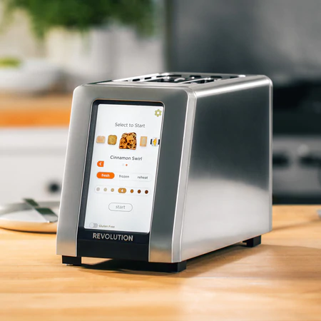

Poput obicnog tostera, pametni toster tostira hleb. Ali ima par caka. Uz pomoc pametne tehnologije pametan toster je u stanju da za samo delic vreme koje je potrebno obicnom tosteru tostira hleb - i ne samo to - Ima dodatne slotove za vasu omiljenu hranu za uzinu kao sto su razni mafini, vafle i razlicita druga peciva.

Zagreva se za samo 2 sekunde i ima preko 60 razlicitih algoritama za pecenje kako biste dobili bas ono sto zelite. Imate izbor za vise od 34 vrsta hleba, kao i opciju za tostiranje hleba koji nema gluten.
Po cemu se jos ovaj toster razlikuje od obicnog? Ima ekran na dodir veci od bilo kog iPhone uredjaja i poseduje senzore za perfektno tostiran tost.